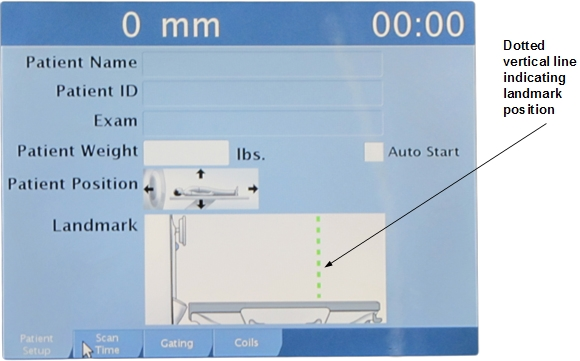
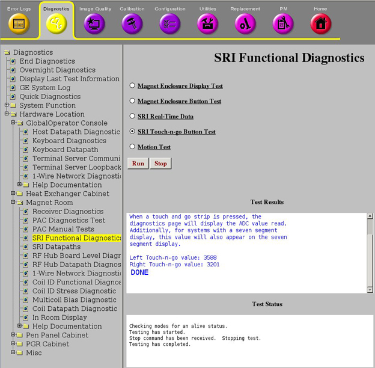
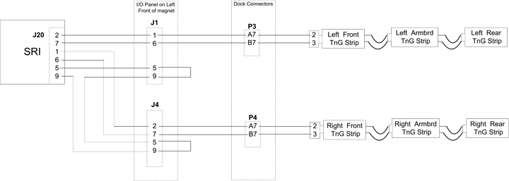
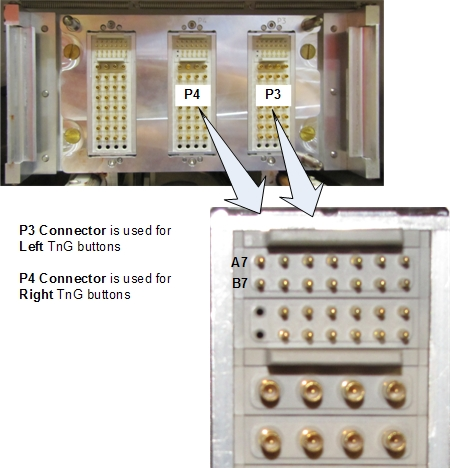
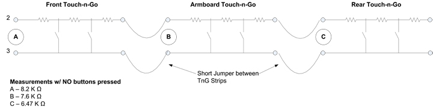
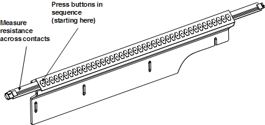

Operating Documentation
Direction 5670006, Rev# 1
Discovery MR750w GEM Service Methods
Module Version 2.0, Version Date 6/30/11
Operating Documentation |
Touch-n-Go (TnG) is a optional feature on DV systems. It provides landmarking push buttons on each side of the patient table. The In Room Display (IRD) displays a dotted vertical line indicating the landmarked position.
Illustration 1: Touch-n-Go Marker on IRD

| ||||
| Using the GEM Posterior Array with any other “Floating Coil,” such as the Anterior Array coil, requires the patient to be landmarked using the Touch-n-Go feature. | ||||
Along the sides of the table, there are three electrically resistive strips in series per side. These strips are contained in the Touch-n-Go assemblies, which consist of the resistive strips and brackets that hold them in place.
| Description | Quantity |
| LH Front TnG Assembly | 1 |
| RH Front TnG Assembly | 1 |
| LH Arm Board (Center) TnG Assembly | 1 |
| RH Arm Board (Center) TnG Assembly | 1 |
| LH Rear TnG Assembly | 1 |
| RH Rear TnG Assembly | 1 |
When a Touch-n-Go button is pressed, the location on the resistive strip is read by the SRI4 using a voltage divider circuit based on the resistive value of the button. The SRI4 then converts this voltage to a digital signal using an A/D converter. There is a delta constant between the alignment light and the first TnG strip. This constant, along with the TnG button signal, is added to the value from the DQA calibration to get the correct advance to scan value.
Bring the cradle to the Home position.
Select the Patient Setup tab on the IRD.
Press a Touch-n-Go button, and verify a dotted vertical line appears at the approximate position where you pressed the button. (see Illustration 1).
Press and hold the Advance to Scan button (on the Operator Panel) until the cradle moves into the bore approximately 18 inches. (The amount of time that you need to hold the button depends on which Touch-n-Go button you pressed.)
Release the Advance to Scan button. The cradle should continue moving into the bore until it is at the landmarked position.
The Touch-n-Go Diagnostic is found within the SRI Functional Diagnostic menu.
When a TnG strip is pressed, the diagnostics page will display the ADC value read. The following illustration shows an example from the diagnostic.
Illustration 2: TnG Diagnostic Example

| NOTE: | ADC values do NOT match resistance values, and may vary somewhat from the values described here (due to tolerances in manufacture). |
The following table shows an approximation of the ADC values you may see during the diagnostic.
| Right Touch-n-go value: 776 | This value is TnG Button pressed near FRONT of Table, and value is read again when button is released |
| Right Touch-n-go value: 3196 | |
| Left Touch-n-go value: 1214 | This value is TnG Button pressed near MIDDLE of Table, and value is read again when button is released. |
| Left Touch-n-go value: 3187 |
The ADC value should return to its original value when the button is released. In our example above, the Left Touch-n-Go value should return to 3187, and the Right Touch-n-Go value should return to 3196.
The following illustration shows a block diagram for Touch-n-Go.
Illustration 3: Touch-n-Go Block Diagram

| Pin | Direction | Signal Name | Description |
|---|---|---|---|
| 1 | Input | LNDMRK_LEFT | Table Left Side Landmark |
| 2 | Input | LNDMRK_RIGHT | Table Right Side Landmark |
| 3 | NC | No connect | |
| 4 | Output | GND | GND |
| 5 | Output | GND | GND for Landmark Cable Detect |
| 6 | Input | LNDMRK_LEFT_RTN | Table Left Side Landmark Return |
| 7 | Input | LNDMRK_RIGHT_RTN | Table Right Side Landmark Return |
| 8 | NC | No connect | |
| 9 | Input | LNDMRK_CBL_PRES_N | Landmark Cable Detect |
To isolate table signals, it is best to measure the resistance between A7 and B7 on both the P3 and P4 front table connectors.
Illustration 4: TnG Front Table Connector

Table 1: Typical Resistance Values
| Description | Resistance* |
|---|---|
| NO TnG Button(s) pressed | 8.2K Ω |
| Front of 1st TnG Strip | 315 Ω |
| Rear of 1st TnG Strip | 600 Ω |
| Front of 2nd TnG Strip | 630 Ω |
| Rear of 2nd TnG Strip | 1.7K Ω |
| Front of 3rd TnG Strip | 1.77K Ω |
| Rear of 3rd TnG Strip | 3.14K Ω |
| *Values are approximate. Use only as a reference. | |
See Touch and Go Strip and Side Bumper Replacement for information about removing the TnG assemblies.
See Side Dock and Bumper Cables Replacement for information about replacing the TnG wiring harness.
The following illustration shows a schematic of the TnG strips.
Illustration 5: TnG Strip Schematic

| This signal: | Should be: |
| Jumper cables | Jumper conductors should have continuity. |
| Front TnG Assembly | Removed from the table, the Front TnG assembly should have an open connection across its contacts. When you press the first button on the assembly, the resistance should be approximately 15 Ω. When you press the second button, the resistance should stay the same. When you press the third button, the resistance should increase by 15 Ω. This pattern will repeat as you press the buttons. The resistance increases by 15 Ω with every other button you press. |
| Arm Board (Center) TnG Assembly | Removed from the table, the Arm Board TnG assembly should have an open connection across its contacts. When you press the first button on the assembly, the resistance should be approximately 30 Ω. When you press the next button, the resistance should remain the same. When you press the third button, the resistance should increase by 30 Ω. This pattern will repeat as you press the buttons. The resistance increases by 30 Ω with every other button you press. |
| Rear TnG Assembly | Removed from the table, the Rear TnG assembly should have a resistance of approximately 6.50 KΩ across its contacts. When you press the first button on the assembly, the resistance should be approximately 65 Ω. When you press the second button, the resistance should stay the same. When you press the third button, the resistance should increase by 65 Ω. This pattern will repeat as you press the buttons. The resistance increases by 65 Ω with every other button you press. |
The next illustration shows an example of a TnG assembly and the buttons to press.
Illustration 6: Example TnG Assembly
